Cesky: , English:
|
Pico16VGA
- 16-colour VGA display on Raspberry Pico
for analogue VGA monitor and digital LCD panel
Version 1.0, December 2021
(c) Miroslav Nemecek
Pico16VGA on Github: https://github.com/Panda381/Pico16VGA
Contents
Pico16VGA is a minimalist library for Raspberry Pico, generating a 640x480/16-color VGA signal for an analog VGA monitor or LCD panel with digital parallel interfacing. Pico16VGA is a simplified version of the full PicoVGA library, with a reduced number of output pins. It is intended primarily for technical use.
Colours generated by the library:
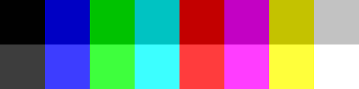
Display on LCD panel with digital parallel interface:
The output of the color signal is provided by 4 output pins with the following meaning: blue, green, red and brightness component. The library supports 3 output pin order: RGB, BGR or GRB. The following wiring example is adapted to the wiring of a Pimoroni Pico VGA test board, which can be used to test the library in a basic way - the image will be visible on the connected VGA monitor and the sound from the left PWM audio channel will be heard, but the image will be only monochrome, green.
When outputting to an analog VGA monitor, the outputs are connected via 330 ohm resistors. The brightness component is connected to the output signals via 1k0 resistors and provides the addition of the base brightness level to all color components. Together with a monitor input impedance of 75 ohms, the required output voltage of 0.7V is provided. The output voltage varies in 4 steps: 0% (0V), 24% (0.18V), 76% (0.56V) and 100% (0.74V). The HSYNC and VSYNC sync signals are applied to the VGA connector via 100 ohm resistors. It is possible to select a sync mix mode where only the HSYNC output is active (meaning the CSYNC signal), VSYNC is not used. This mode is not supported by some older VGA monitors.
The library supports digital parallel output to the LCD panel with the R6G6B6 interface. A wiring example for the AT056TN53 display is shown in the diagram. The color outputs are brought to the high 2 bits of the color components (R5+R4, G5+G4, B5+B4). The brightness output controls the lower 4 bits of all color components, thus providing control of the increased color brightness. In addition to the color signals, the HSYNC and VSYNC synchronization signals, as well as the DE control signal and the DCLK clock signal are provided to the display.
The digital display can operate either in HV mode, where the HSYNC and VSYNC signals are applied, or in DE mode, where the DE control signal is applied to provide synchronization control. In addition to these signals, a clock signal DCLK is generated. The clock signal has a frequency of 25.2 MHz. The rising edge of the clock signal is centered in the middle of each pixel and thus provides a transcription of the pixel value into the display registers.
The output color signals can be placed on any pins of the Raspberry Pico module. However, the condition that the GPIO must form a continuous sequence must be observed. In the library configuration, the beginning GPIO can be selected for the first color signal, the other 3 signals must follow on the following GPIOs. The library does not directly specify which color will be assigned to which pin. While the RGB, BGR or GRB color order can be selected in the library configuration, this only determines the predefined color name constants and the operation of the RGB component merge function. This can easily be changed as needed.
For the HSYNC, VSYNC, DE and DCLK control signals, similar conditions apply as for the color signals - the signals can be placed on any GPIO, but the GPIOs must form a continuous sequence.
In the library configuration, 5 modes of operation can be selected, depending on how the display is connected. This affects which control signals will be used. The pins of unused control signals can be used for other purposes. An overview of the used control signals is given here in the table:
| mode | intended for |
used signals |
| 0 | new analog VGA monitor | HSYNC |
| 1 | old analog VGA monitor | HSYNC, VSYNC |
| 2 | analog VGA monitor + digital LCD panel | HSYNC, VSYNC, DCLK, DE |
| 3 | digital LCD panel in HV mode | HSYNC, VSYNC, DCLK |
| 4 | digital LCD panel in DE mode | DCLK, DE |
As an auxiliary signal, an LED signal is also fed into the digital display, which controls the brightness of the LED backlight of the display by means of PWM control (with a frequency of 300 Hz). The function is optional in the configuration.
The AUDIO signal is a PWM audio output, which should be followed by a low pass to filter the modulation component. The function is selectable in the configuration.
A debug UART console can be connected to the GPIO0 and GPIO1 pins. A converter converting 3.3V levels to USB interface can be used. The UART console is used in some sample programs to use keyboard control. It can also be replaced by a USB interface, using a USB programming connector and a console program (begPutty).
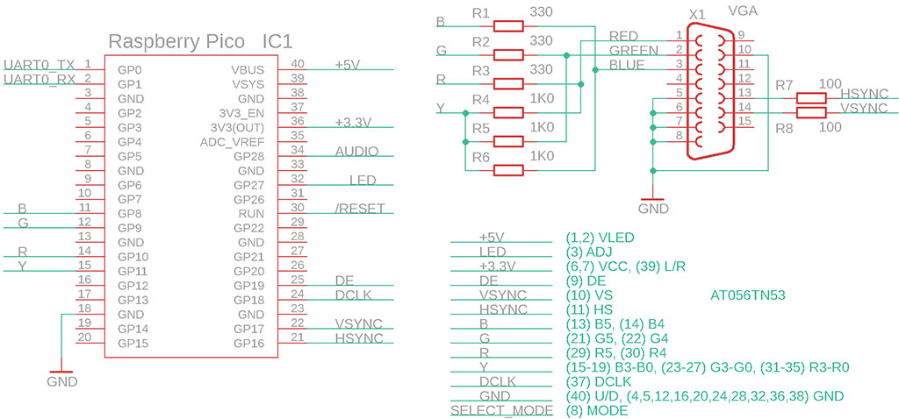
The library is ready to be compiled in a Windows environment. It only requires the installation of the GCC-ARM compiler (installation file gcc-arm-none-eabi-10-2020 ). If you install the compiler in the C:\ARM10 folder, just unzip the library into a working folder and start the compilation. The c.bat command files are used for compilation. The d.bat files are used to clean up the temporary compilation files. The e.bat file is used to send the compiled program to the Pico - it is recommended to choose the R: drive for the Pico for this purpose.
The library configuration file can be found in the _vga folder, the config.h file. For most uses, the basic configuration parameters, labeled "base configuration", will suffice.
VGA_MODE - determines the mode of operation and the connected display type. The individual modes were listed in the table next to the Wiring Diagram: 0=old analog VGA monitor, 1=new analog VGA monitor, 2=universal mode (analog VGA and digital LCD), 3=digital LCD panel in HV mode, 4=digital LCD panel in DE mode. If you change the selected display mode, you must yet uncomment the appropriate section in the vga.pio file to define the side-set pins.
VGA_SHIFTX - horizontal image shift in the range of -12 to +12 pixels.
VGA_SHIFTY - vertical image shift in the range of -9 to +9 lines.
COLOR_FORMAT - RGB, BGR or GRB colour format selection. The parameter determines the order of colors on the output pins. The parameter specifies only the predefined COL_* color constants and the COLRGB color merge function. The parameter does not affect the color order in images - when importing images, you must use the appropriate palette definition file in the _vga\_exe and _vga_\exe_\Pico16VGA_pal folders.
VGA_GPIO_FIRST - first GPIO pin for color signals. Any GPIO pin can be selected, but all pins used must form a continuous sequence.
The following 4 parameters define the GPIO with control signals. The unused pins do not need to be configured. The used pins can be placed on any GPIO, but they must form a continuous sequence and their order cannot be changed.
VGA_CTRL_HSYNC - GPIO pin
with HSYNC signal
VGA_CTRL_VSYNC - GPIO pin with VSYNC signal
VGA_CTRL_DCLK - GPIO with DCLK signal
VGA_CTRL_DE - GPIO with DE signal.
USE_PWMLED - 1 enables the use of PWM control of the LED backlight of the digital display.
PWMLED_GPIO - GPIO number with PWM LED output.
USE_PWMSOUND - 1 enables the use of PWM audio output.
PWMSND_GPIO - GPIO number with PWM audio output.
The _boot2 folder contains the 2nd stage loader that is attached to the compiled programs.
The _exe folder contains the program elf2uf2.exe, which converts the compiled program from elf format to uf2 (the format needed to load into Pico).
The _sdk folder contains the Pico library SDK files.
The _tinyusb folder contains USB support, e.g. for outputting debug texts to the USB console.
The programs in _tools are helper programs used during compilation.
The _vga folder contains the code for the Pico16VGA library. The _vga\_exe folder contains the library helper programs - a palette generator for importing images (along with the generated palette files), a converter for importing images into the program, a generator for setting the PLL clock, and a converter for importing sounds into the program.
Furthermore, in the library folders you will find sample programs that will best illustrate the use of the library. Use the c.bat file to compile the program, the e.bat file to load the program into Pico, and the d.bat file to clean up the folder. You can add any additional compiled files to the Makefile in the ASRC, CSRC and SRC parameters.
The Makefile also contains the "stdio output" parameters that determine the output to the debug console. You can select either output to UART (e.g. via UART adapter) or output to USB programming connector (virtual COM port). You can control the program via the console using the keyboard. If you use the console, add stdio_init_all() to the beginning of the main() function to initialize the console output.
The library contains a FrameBuf image buffer of size FRAMESIZE (= 153600 bytes), which is displayed by the library. The image has dimensions WIDTH = 640 and HEIGHT = 480. Each pixel is represented by 4 bits of data in the buffer. There are 2 pixels in each byte of the image buffer. The higher 4 bits bit4..bit7 contain the first pixel (even), the lower 4 bits b0..b3 contain the second pixel (odd). In addition to direct access, you can use the draw.cpp graphics library functions to access the image buffer.
Handling of the display is done in the second core of the processor. For proper display, it is necessary that the second processor core is not overloaded with interrupt functions. Therefore, place interrupt handlers in the main, first processor core. If you want to use the second processor core for the program, the Core1Exec function is used for this purpose (see _vga\vga.h). For an example of using the second core, see the Mandelbrot sample program.
In addition to the main kernel, the Pico16VGA library contains additional support functions. Any programs and utilities are in Windows EXE format.
draw - is a library for drawing into the image buffer. The library contains functions for drawing rectangle, frame, circle, text and images. The library includes support for drawing to the background buffer, allowing you to draw to the screen without flickering graphics. The main FrameBuf image buffer occupies 153 KB of RAM, leaving insufficient space for a second rendering buffer. This is solved in the library by using rendering strips. The program reserves a render buffer of e.g. half the size of the main image buffer FRAMESIZE/2 (= 76800 bytes), which already fits in 264 KB of RAM. The pDrawBuf pointer is set to the address of the drawing buffer, DrawBufH will contain the height of the drawing buffer (here HEIGHT/2 = 240). Rendering to the screen is then done in two steps - the beginning of the DrawBufY buffer is set to 0, the entire image is rendered using the render functions, and the DrawBufUpdate() function transfers the contents of the drawing buffer to the main image buffer. The DrawBufY pointer is moved to the HEIGHT/2 coordinate and the same full image is rendered again. The render functions will crop the rendered content. In this way, the image can be rendered without flickering sequentially, one strip at a time. The method is used in the Balloons sample program.
pwmled - controls the brightness of the PWM LED backlight of the digital display.
pwmsnd - audio output. The library activates the PWM generator on the appropriate output pin. Headphones or an external amplifier can be connected (via RC filter) to the pin. The audio file format is PCM 22050 Hz, mono, 8 bits unsigned. Both single audio playback and repeated playback with variable speed is possible.
rand - random number generator. The library generates random numbers with 32-bit seed, with different output data sizes and in selectable ranges.
The programs are ready for keyboard control via the PC console. The begPutty program and a virtual USB serial port can be used as a console. Some programs use sound - generating PWM sound via pin GP28 (program marked with "(sound)").
| 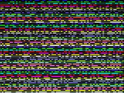 | Analyzer - simple single channel logic analyzer with sampling frequency 126 MHz (GPIO15 input, Pico pin 20). It also contains a random noise generator (as a test sample, output GPIO14, Pico pin 19), adjustable up to a sampling rate of 126 MHz (set to 15.75 MHz in the example). |
| Balloons - demonstration of drawing into the back buffer, flying balloons. | |
| 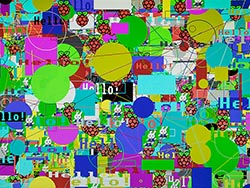 | Draw - demonstration of drawing graphic elements. For the demonstration, alternate between slow rendering and drawing at maximum speed. |
| 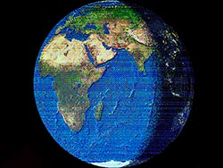 | Earth - rotating globe. Software spherical image transformation. |
| 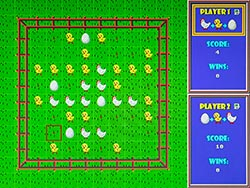 | Eggs - logic game (sound). Based on the game Reversi. The goal is to get as many of your own stones as possible. One player changes stones in the direction of chicken-egg, the other player in the opposite direction. Controls: L right, I up, J left, K down, H help, Q end, P 2 players, D demo, space bar to place stone, Enter ok. Can be played against another player and against the computer. |
| 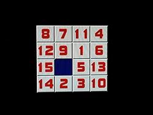 | Fifteen
- logic game (sound). The objective is to line up the
stones in order from 1 to 15. Controls: L right, I up, J left, K down, Q new game. |
| 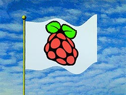 | Flag - flying flag |
| 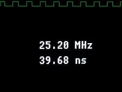 | Frequency Meter - frequency and period digital signal meter with 4 digit accuracy, in the range of 2.5 Hz to 63 MHz, with display of the signal waveform pattern. GPIO15 input, Pico pin 20. The meter automatically combines two measurement methods - signal frequency and period measurement. |
| 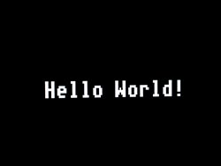 | Hello World - the simplest example of using the Pico16VGA library. |
| 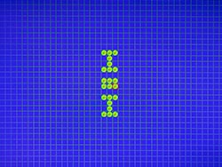 | Life - cell life simulator (cellular automaton). Cells change at each step according to the number of neighboring cells: for 1 or less a cell dies on isolation, for 4 or more a cell dies on overpopulation, for 3 a new cell is created, for 2 there is no change. In the game, you can switch between 10 screens (slots) and transfer the image between them using the clipboard. In each slot there is a predefined definition of popular combinations. Controls: L right, I up, J left, K down, C copy to clipboard, V insert from clipboard, D clear area, space bar change cell, Enter start/stop generation, 0-9 select slot. |
| 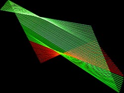 | Lines - relaxation line pattern generator. |
| 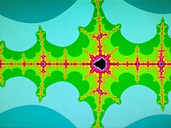 | Mandelbrot - fractal pattern generator of Mandelbrot set. Integer mathematics is used to generate the pattern, which makes the redrawing fast. However, it must be taken into account that as the scale of the display increases, increasing accuracy in the number of digits is required. The used integer and float mathematics are sufficient up to a magnification scale of 10^5, double mathematics up to a scale of 10^10. When zooming in further, only colored lines are displayed instead of the pattern. Controls: E up, S left, D right, X down, Q scale up, A scale down, I switch to integer math (fastest, range up to 10^-5), F switching to float math (slowest, range up to 10^-5), B switching to double math (slowest, range up to 10^-10), O decreasing the number of iteration steps, P increasing the number of iteration steps, space redraw screen. |
| 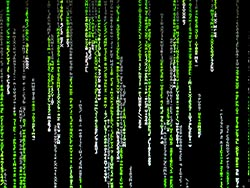 | Matrix Rain - "matrix code rain" simulation. |
| 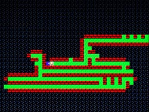 | Maze - the goal is to find a way out of the maze. The mazes are generated randomly programmatically. Controls: J left, I up, L right, K down, H help (showing the door). |
| 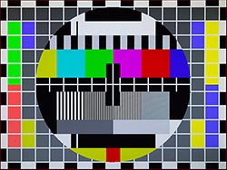 | Monoscope - display test, show monoscope. |
| 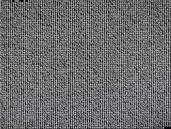 | Pi - calculating the number Pi to 4780 digits. After the calculation, the result is checked against the expected sample. |
| 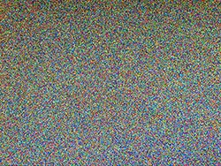 | Pixels - random generation of colored pixels. |
| 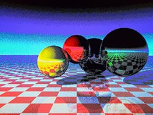 | Raytrace - 3D pattern generation by ray tracing method. Due to the limited color depth of the Pico16VGA, raster dithering ("graininess" of the image) is used in the display. |
| 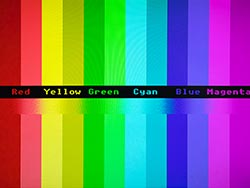 | RGBtest - color test. |
| 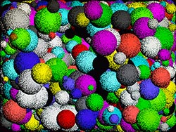 | Spheres - random spheres generation. |
| 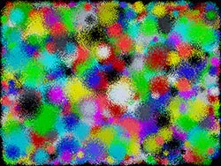 | Spots - random generation of spots. |
| 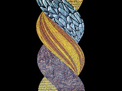 | Twister - twisting of the textured block. It serves as an example of programmatic image deformation. |
| Water Surface - simulation of rippling water surface (sound). |
Author: Miroslav Nemecek, http://panda38.sweb.cz
{kind=link}
{kind=link}
{kind=link}
{kind=link}
{kind=link}
{kind=link}
{kind=link}
{kind=link}
{kind=link}
{kind=link}
{kind=link}
{kind=link}
{kind=link}
{kind=link}
{kind=link}
{kind=link}
{kind=link}
{kind=link}
{kind=link}
{kind=link}
{kind=link}
{kind=link}
{kind=link}
{kind=link}
{kind=link}